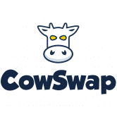 CowSwap CowSwap 是让您高枕无忧的加密货币交易所。 在 CowSwap 上，您不必担心找到最优惠的价格、优化您的 gas 成本或被机器人利用。我们会为您处理好一切。 避免加密网络的所有
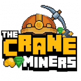 Crane Miners The Crane Miners NFT 10.000 独特的矿工将永远存在！每个人每天可以挖掘 1 分钟，以获得尽可能多的代表 CRANE 代币奖励的石头、黄金或宝石！ 游戏玩法 用户必须选择一名矿工才能
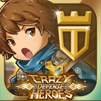 Crazy Defense Heroes Crazy Defense Heroes 手机游戏现已推出全新的“游戏即赚”“每日明星宝箱”活动。 Crazy Defense Heroes 手机游戏是即将推出的使用不可替代代币和 TOWER ERC-20 的塔防区块链游戏的基础。 该游戏
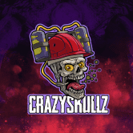 CrazySkullzNFT 一支由 10,000 名独特的 CrazySkullz 组成的军队从死里复活，困扰着我们的星球并承诺毁灭它！ 战争、死亡或疾病的气味使他们更加强烈。 数百年来被杀害的最残暴的罪犯旨在
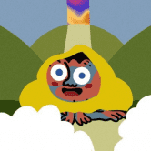 CreatureToadz CreatureToadz 是 Creatures 和 CryptoToadz 这两个独立成功的 NFT 社区之间的第一个交叉项目。 艺术是从头开始制作的，以确保两者之间*完美*的风格结合。 不遗余力，我倾注了我的灵魂，将
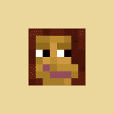 Critterz Genesis 以太坊区块链上第一个完全链上 NFT 在 Minecraft 上启用 P2E 。 质押以在游戏中生成 $BLOCKs 并在虚拟世界中拥有土地。 有史以来最活跃、最有
CROATOM CROATOM 是 CRONOS 链上第一个获得 $ATOM 奖励的代币。 只需持有代币即可自动获得 9% ATOM 再分配（反射）奖励！ 税制9% 原子奖励CROATOM 的每笔交易的 9% 以
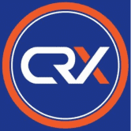 Crodex Crodex 是一个去中心化交易所 (DEX)，提供流动性并支持 Cronos 上的点对点交易。 我们开始吧：CRX Metaverse Hub 2.0 — 在 CROWD Launchpad 上的初始代币销售和启动Metaverse
Croge CrogeCoin 是在团队认识到 Cronos 社区是受人尊敬和专业的，但缺少一件事时创建的； 炒作。 CrogeCoin 旨在将 meme 硬币的炒作和乐趣带入 Cronos 链。 该团队着手在一个对他们来说完全陌生
CroKing 购买 CroKing (CRK) 并持有。 赚取CRO！ CroKing 使用 Cronos 平台代币 ($CRO) 向您付款。 相当于在以太坊链上赚取 ETH。 CRO 是 Cronos 链的平台代币，有无数的用例，其中最受欢迎的是强大
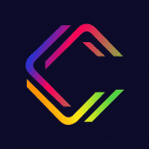 CronaSwap CronaSwap 是 Cronos 链上第一个提供最低交易费用 (0.25%) 的去中心化交易平台。 您可以在 Cronos Chain 网络上轻松交换 CRC-20 代币，保证卓越的速度和更低的网络交易成本。 CronaSwap 旨在成为 DEX 平台
Cronos Live Lottery Cronos Live Lottery 是一种 CRC20 代币，每天数次通过自动 MMF 奖励支付奖励其持有者。 秘密推出并由 Crofam 社区管理，我们来这里是为了让你赢..！ 主要目标是成为 Cronos 网络上最大、
CroSea 什么是 Crosea？ Crosea 是在 Cronos 区块链上交易不可替代代币 (NFT) 的最大开放 nft 市场。 使用 CRO、Wrapped USDT 和任何 CRC20 代币，Cronos 社
Cross Pool Cross Pool 是 Hot Cross 产品套件的成员，该产品套件提供了一种安全且去中心化的方式来奖励用户质押 LP 代币和单面传统 BEP20 代币。 该协议在技术上适用于各种 Staking 场景和任何
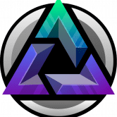 Darkside Finance Darkside Finance 是唯一真正由用户拥有的收益农场。所有矿池和农场都会产生两个代币！ CZDIAMOND 是一种所有权代币，质押者获得所有存款费用的 75% 和所有其他平台收入的 50% 作为
DashLotto 玩我们新的 100% 可证明公平的彩票：DashLotto！一张 10 TRX 门票，您将赢得两个大奖！每天奖励 1000 DASH，每周累积累积 TRX 头奖 每张票都让您有平等的
Datamine Datamine Network 是一个新的非托管和去中心化开源经济系统，它使用智能合约来创建自适应货币。我们的双代币 DeFi 协议每 15 秒产生一次红利。 由燃烧证明支持的加密货币 Datamine
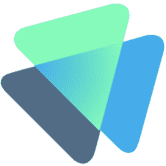 daVinci NFT Marketplace daVinci 市场是一个 NFT 市场，支持创建、购买和销售在 Harmony 区块链上铸造的 NFT（不可替代代币）。这意味着，与使用 ETH 的 Rarible 或 OpenSea 相比，Harmony 原生代币 ONE 推
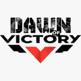 Dawn Of Victory “失败只有一个答案，那就是胜利”（温斯顿·丘吉尔爵士） Les sanglots longs 大提琴 德尔奥托姆 祝福我心 D’une langueur 单调 就在贝多芬第五交响曲的第一个音符和传说中的公式“
DAXTron DeFi 世界的下一代智能合约。 Tron 区块链上的去中心化 Dapp 应用程序。 独特的营销 没有类似物 每天 2.5% 起 期限为 100 天 从 250% 到 1250% 的回报 会员计划 水平 - 6% 水平 - 2% 水平 - 2%
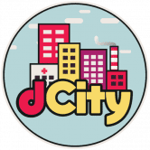 dCity Dcity 是一款基于 Hive-Engine 上可用的不可替代代币的数学和交易游戏。玩家使用代表建筑物、公民、技术的代币建造自己的城市，并以蜂巢（基于排名）和 SIM 治理代币（基
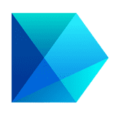 DDEX Margin DDEX Margin 是一个去中心化的交易平台，让用户可以进行杠杆交易、借贷和产生利息。 * 按需，年化率高达 15%，ETH、USDT、DAI * 高达 5 倍杠杆，多头
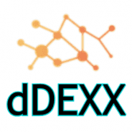 dDEXX dDEXX 是一个基于自动做市商 (AMM) 的去中心化交易所 (DEX)，拥有可盈利的 DeFi Yield Farms、矿池等。" dDEXX 是一个基于自动做市商 (AMM) 的去中心化交易所
ddos 如果你调用合约的 gettoken 方法，同时它也会发送它持有的所有 DDOS 代币的 0.01%。从格林威治标准时间 2019 年 11 月 1 日上午 8 点开始，它还将每秒铸造 25 个新的 DDOS 令
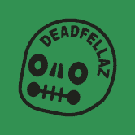 DeadFellaz 用你的 DeadFellaz 代币来艺术、文化和社区 我们在这里是为了对艺术的热爱以及游戏化、IP 和 NFT 技术的发展。 我们的工作重点是在 NFT 空间内进行创新，并以创造性的方
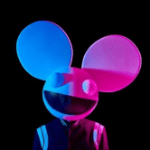 Deadmau5 NFTs 快到 2021 年了，音乐正在走向虚拟化。 Deadmau5 自己的“项目 oberhalsi”即将推出。数字节目意味着数字商品，对吗？您可能无法触摸它，但这些基于区块链
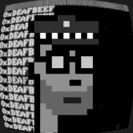 Deafbeef V2 DEAFBEEF 在 2020 年 COVID 19 大流行开始时开始了一个艺术项目。当我的孩子们还小的时候，我在岩石下生活了 7 年之后，我发现模块化合成器已经重新流行起来。拥有电气工
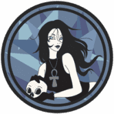 Death 死亡是桑德曼金融的最后一层。 DEATH 是一种带有 Anti-Bot 系统的单产农业，具有自动复合功能的 Vaults 和具有 Max-Supply 的多层，NFT Farming，NFT Battles 和 Gambling 如果您正在寻
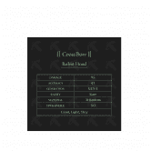 Death Combat ETH NFT Combat / Death Combat 是一款基于以太坊的 PvP 对战游戏，您可以在其中使用您铸造或拥有的武器和装备进行多人战斗。我们是一款跨 IP、跨平台（PC+ 移动）的 PvP 格
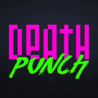 Death Punch Death Punch 是一款真正去中心化的游戏。 DeFi 允许释放 Death Punch 的全部潜力，并为公众对新加密项目日益增长的兴趣创建一个自适应平台。如今，市场上的大多数游戏都仅在
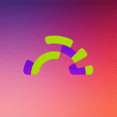 deBridge deBridge 是一种跨链互操作性和流动性转移协议，允许在各种区块链之间分散转移资产。 deBridge 协议是一个基础设施平台和挂钩服务，用于： 智能合约的跨链可组合性 跨链
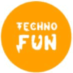 Decentral Ludo Ludo 是一款适合 2-4 人的战略棋盘游戏，每个玩家都获得四个代币或棋子。赢得游戏获得奖池奖励并为每一个棋子移动铸造 TFN 有趣的鸟 Fun Bird 是一款受 Flappy Bird 启发的游戏
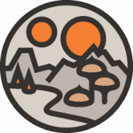 Decentraland Decentraland 市场允许用户浏览、购买、出售和管理 LAND 代币。 Marketplace 是一个建立在以太坊上的完全去中心化、零费用的应用程序。 测试你的想象力极限 使用简单的 Builder 工具创建场


 是一种奖励代币，为持有 $CRK 支付 $CRO。")